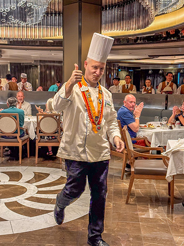

Fogo e Brasa churrasco que aquece a alma.
FAÇA SUA RESERVA
NOSSO CARDÁPIO
EXPLORE POR NOSSOS PRATOS


NOSSAS RESERVAS


BUFFET
$$$$
RESERVA EMPRESERIAL
$$$$
RESERVA FAMILIAR
$$$$
RODIZIO
$$$$
NOSSA HISTORIA
Sobre a Churrascaria Fogo e Brasa
Fundada em 2012 por Carlos, a Churrascaria Fogo e Brasa nasceu com uma missão clara: levar a
autêntica experiência do churrasco gaúcho para a nossa região. Desde o primeiro dia, dedicamo-nos a
manter a tradição e o cuidado artesanal em cada detalhe.
Somos movidos pela qualidade: selecionamos apenas carnes de alta qualidade e trabalhamos com cortes
tradicionais que são a essência do verdadeiro churrasco. Para complementar, oferecemos um buffet
variado, preparado diariamente com ingredientes frescos para garantir a melhor harmonização com os
nossos pratos principais.
Nosso espaço foi pensado para ser o lugar ideal para você. Com um ambiente amplo e acolhedor, a
Churrascaria Fogo e Brasa é perfeita para reunir famílias, grupos de amigos e, também, para sediar
eventos empresariais. Buscamos oferecer mais do que uma refeição; queremos proporcionar um momento
de prazer e convívio, onde a comida de primeira e o atendimento atencioso são prioridade.
Seja você um apreciador do churrasco, alguém em busca de um almoço em família ou um organizador de
eventos c orporativos, convidamos você a conhecer a tradição e o sabor da Fogo e Brasa.
